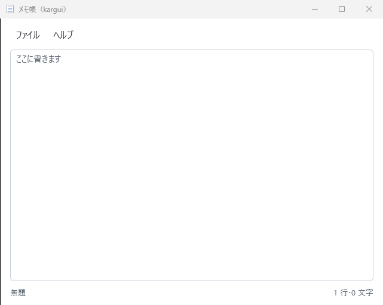
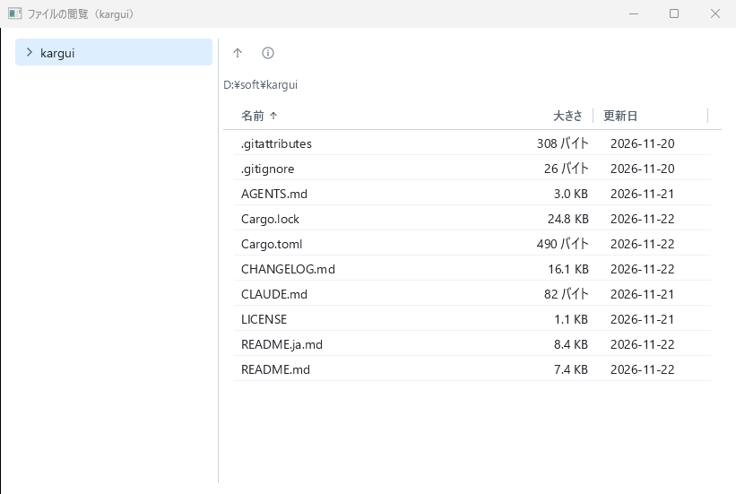
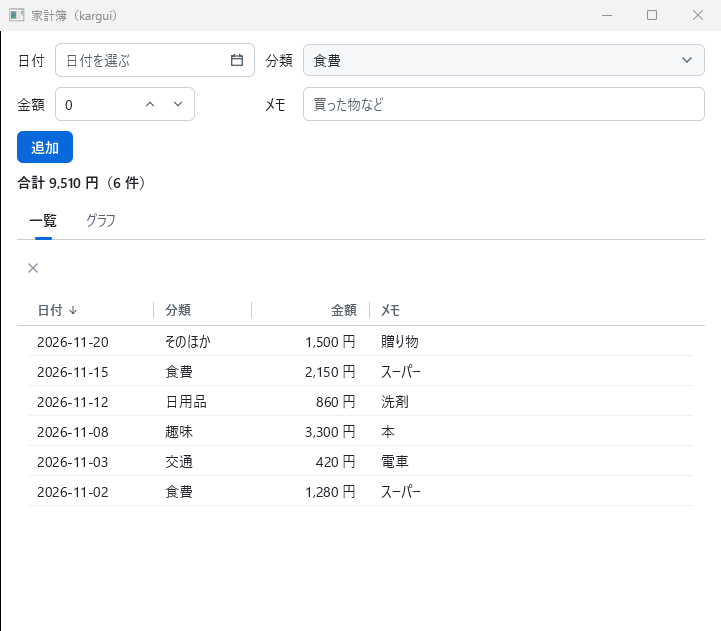

kargui 開発レポート ・ 第 3 章
ふつうのアプリで見つけたこと
部品の試験が全部通っても、アプリが書けるとは限りません。部品を組み合わせた時に初めて足りない物が見えるからです。そこで、0.2 の最後の確かめとして、メモ帳・家計簿・ファイルの閲覧の 3 本を kargui だけで書きました。この章では、書いて見つかった不足と、作者が本物の窓で見つけた不具合を紹介します。
この章で分かること
- 3 本のアプリが、それぞれ kargui のどの部品と仕組みを使っているか
- アプリを書いて見つかった 6 つの不足と、その直し方
- ファイルのダイアログを足しただけで、起動が 14 ms 遅くなった理由
- 作者が操作し、AI が記録を読んで直す、確かめ方の流れ
3 本のアプリ

examples/notepad）
examples/files）
examples/expenses）。棒グラフは自由に描く面で描いている。| アプリ | 使っている部品と仕組み |
|---|---|
メモ帳examples/notepad | メニューバーとショートカット、複数行の入力欄、ファイルを開く・保存するダイアログ、閉じる前の確認、窓のアイコンと最小の大きさ |
家計簿examples/expenses | 格子に並べた入力欄、日付の選択、ドロップダウン、数の入力、タブ、並べ替えられる表と行の右クリック、ツールバー、自由に描く面の棒グラフ |
ファイルの閲覧examples/files | 左右の仕切り、フォルダーの木、ファイルの表、別の窓のプロパティ |
3 本とも、kargui の外の GUI の道具は使っていません。どれも 300〜400 行（試験を含む）で、試験台の試験が付いています。
書いて見つかった不足
部品を 1 つずつ試していた時には見えなかった不足が、6 つ見つかりました。どれも kargui の側で直しました。
| 見つけたアプリ | 困ったこと | 直し方 |
|---|---|---|
| メモ帳 | 保存のダイアログを取り消したかどうかが分からず、「保存してから閉じる」の続きを捨てられない | ui.file_dialog_cancelled(キー) を足した |
| 家計簿 | 表の行に右クリックのメニューを付けられない | TableRow::context_menu を足した |
| 家計簿 | タブの中の表の高さが 0 になり、何も見えない | タブの中身が残りの高さを取るようにした |
| ファイルの閲覧 | 木の鍵に、ファイルのパス（PathBuf）を使えない | 鍵に求める性質を Copy から Clone にゆるめた |
| ファイルの閲覧 | ファイルの更新日（1970 年からの秒）を日付にできない | Date::from_unix_days を足した |
| 3 本とも | 試験台が、同じ名前の部品のうち見えていない方を押す（開いたメニューの「削除」ではなく、後ろのボタンの「削除」） | 試験台が、利用者に見えている物（開いたメニューの中、上の物、ラベルより入力欄）を選ぶようにした |
6 つとも、部品を 1 つずつ確かめる試験では見つかりませんでした。「保存してから閉じる」「表の行ごとに操作する」「ファイルの日付を出す」のように、アプリの流れの中で初めて要ると分かった物です。たとえばタブには、残りの高さを取る表を中に置いた時の試験がありませんでした。直す時に、その組み合わせの試験も足しています。
ダイアログを足したら、起動が遅くなった
ファイルのダイアログを足した後、いつもの測定を走らせると、何もしないタスク帳の起動が遅くなっていました。ダイアログを出していないのに遅くなったので、原因はダイアログを出す処理そのものではありません。
調べると、遅くなった理由は 2 つありました。
- COM の初期化: ダイアログ（IFileOpenDialog）は COM の部品なので、窓のスレッドを COM の STA にする必要があります。これを起動の時に行っていました。
- shell32.dll の読み込み: 始めのフォルダーを渡す関数（SHCreateItemFromParsingName）は shell32.dll にあります。Rust の windows crate でふつうに呼ぶと、この DLL がプログラムの起動の時に読み込まれます。shell32.dll は大きく、読み込むだけで十数 ms かかります。
どちらも、ダイアログを初めて出す時まで遅らせました。shell32.dll の関数は、使う時に LoadLibraryW と GetProcAddress で探して呼びます。これで起動は元の速さに戻りました。
めったに使わない機能のために大きな DLL（shell32.dll など）の関数をふつうに呼ぶと、その機能を使わない人の起動も遅くなります。部品や仕組みを足したら、組み立て直してから起動の時間とメモリを測ってください。kargui では、足すたびに同じ道具で測っています。
作者が本物の窓で見つけたこと
本物のファイルのダイアログは前面に出て入力を取るので、自動の試験では開けません。そこで、作者がメモ帳を操作し、その記録を AI が読む形で確かめました。作者は「試した」と伝えるだけで、どこがおかしかったかは書きません。AI が記録から探します。
記録から、ダイアログそのものは期待どおりに動いていると分かりました。そのうえで、2 つの問題が見つかりました。
| 記録に出ていたこと | 原因 | 直し方 |
|---|---|---|
| Ctrl+Q が 3 回押されて、何も起きていない | メモ帳の「終了」にショートカットが無かった（作者は Ctrl+Q で終わると思った） | 「終了」に Ctrl+Q を付けた。書きかけがあれば確認を出す流れは同じ |
書きかけのまま閉じたのに、確認が出ずに閉じた（allowed=true） | 確認の画面で「保存しない」を押すと、続きの操作の前に「変更あり」の印を消していた。続きの「開く」を取り消すと、書きかけが残るのに印だけが消えていた | 印を消すのは、新規や読み込みで実際に文字を置き換えた時だけにした |
「保存しない」を押した時点で「変更なし」に戻すと、次の操作が取り消された場合に、書きかけが「変更なし」の扱いで残ります。状態を戻すのは、実際にデータを置き換えた所で行ってください。メモ帳は、新規と読み込みの処理がそれぞれ自分で印を消します。